The King Fisher
Built by Ege Özgül

This is a fully handmade wooden model boat. It is equipped with electronic recceiver and dc motor which make it a remote controlled model boat. It took one and a half year to built it.
Stages of the building process
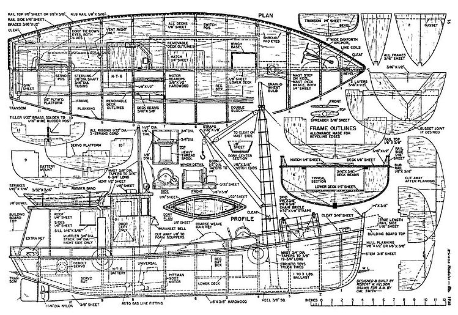This is the original blueprint used.
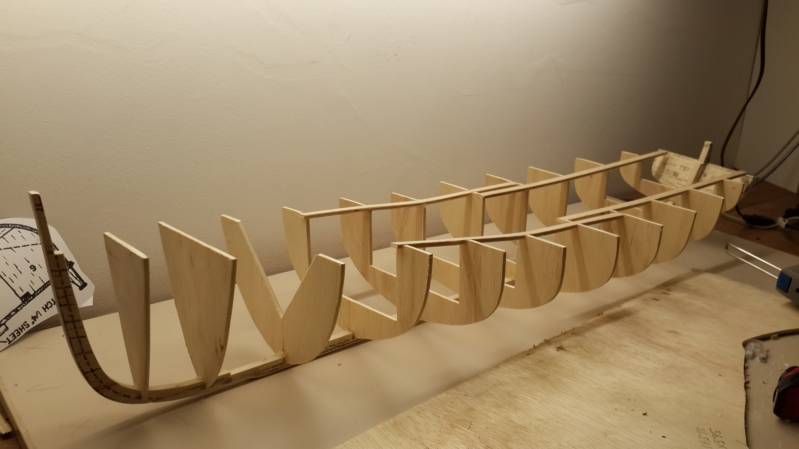 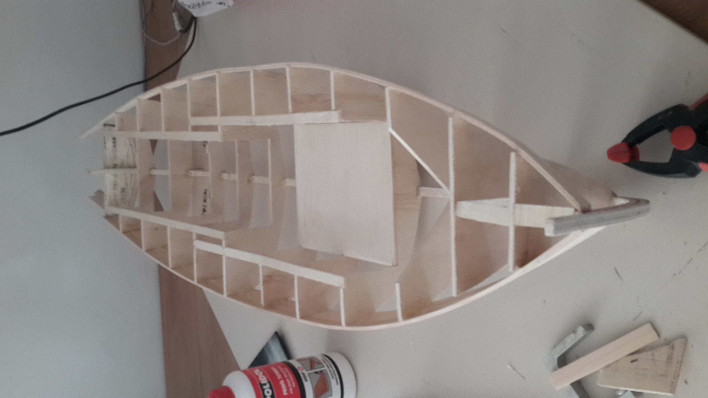
This is the wooden skeleton of the whole boat.
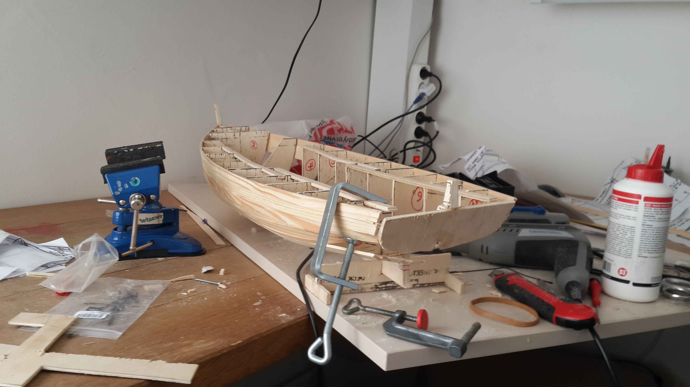
The Plnaking stage was quite hard since I used thick pine wood which was hard to bend.
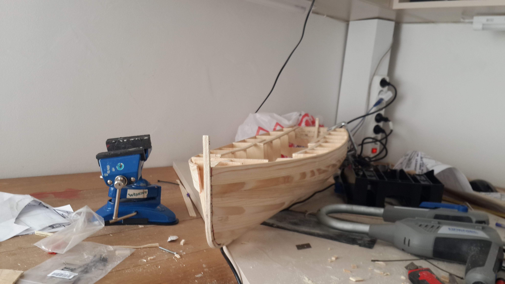
At this stage, half of the planking was done. But I had realized that the by only planking one side, the spine was bent to one side. So the whole boat was curved.
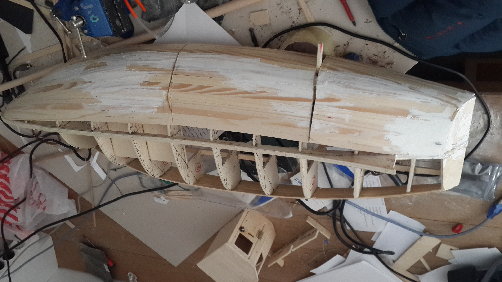To fix this curveture, I sliced the boat into three parts, and bened the boat back untill the spine was straight again, then reinforced the hull.
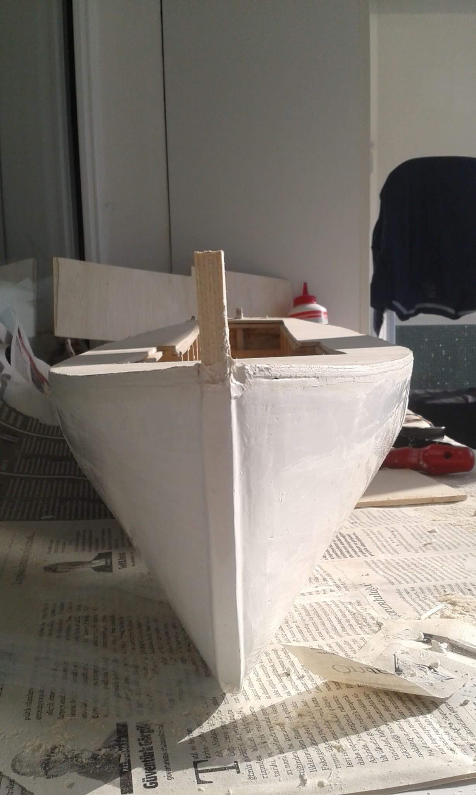 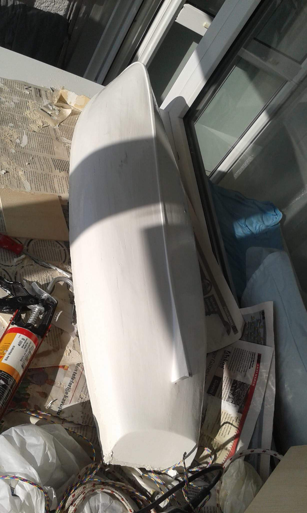Painted to white.
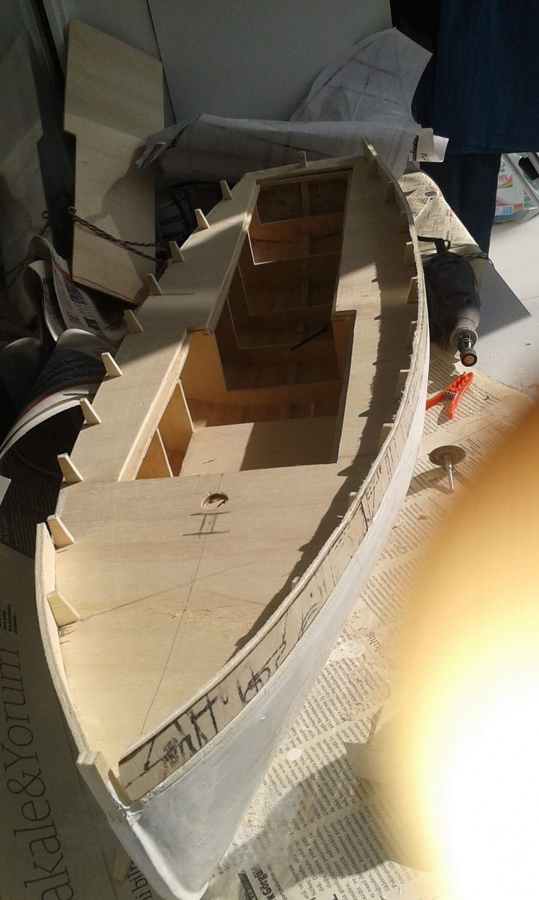 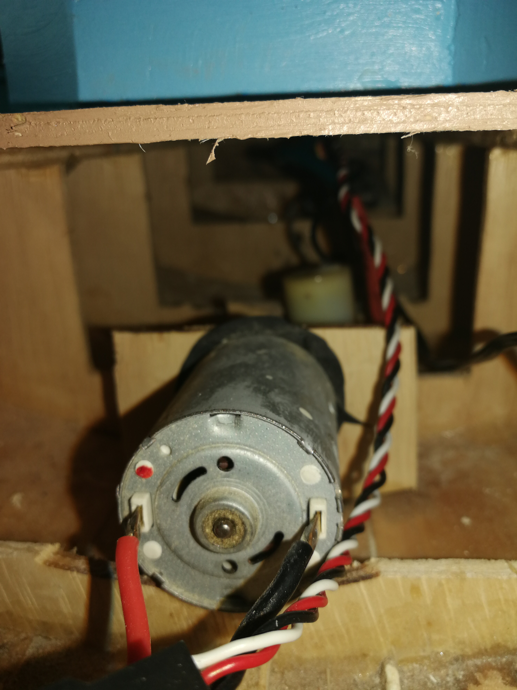This is the dc motor.
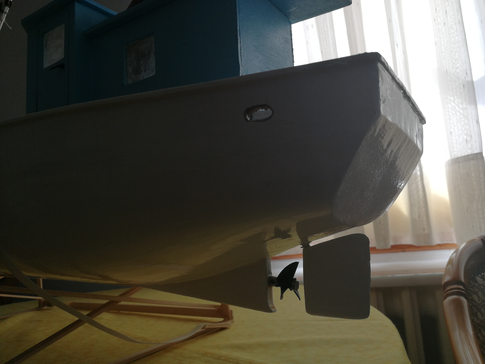The rudder is connected to a servo motor. The shafts of the propeller and the rudder are piped to prevent water leaks.
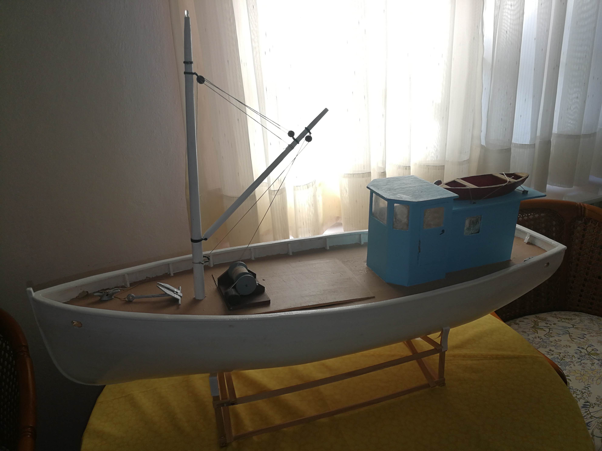The accessories are printed in a 3d printed using ABS filament and then painted.
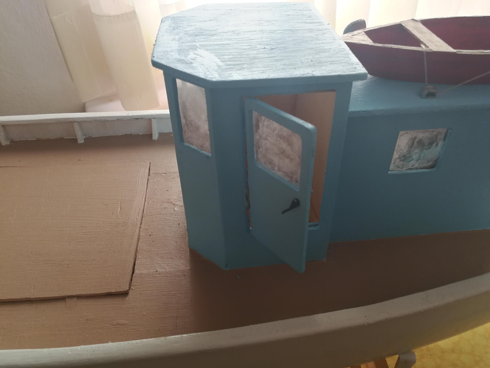The door has a function handle. The handle was made by soldering thick copper wires and sanding it. It was painted finally.
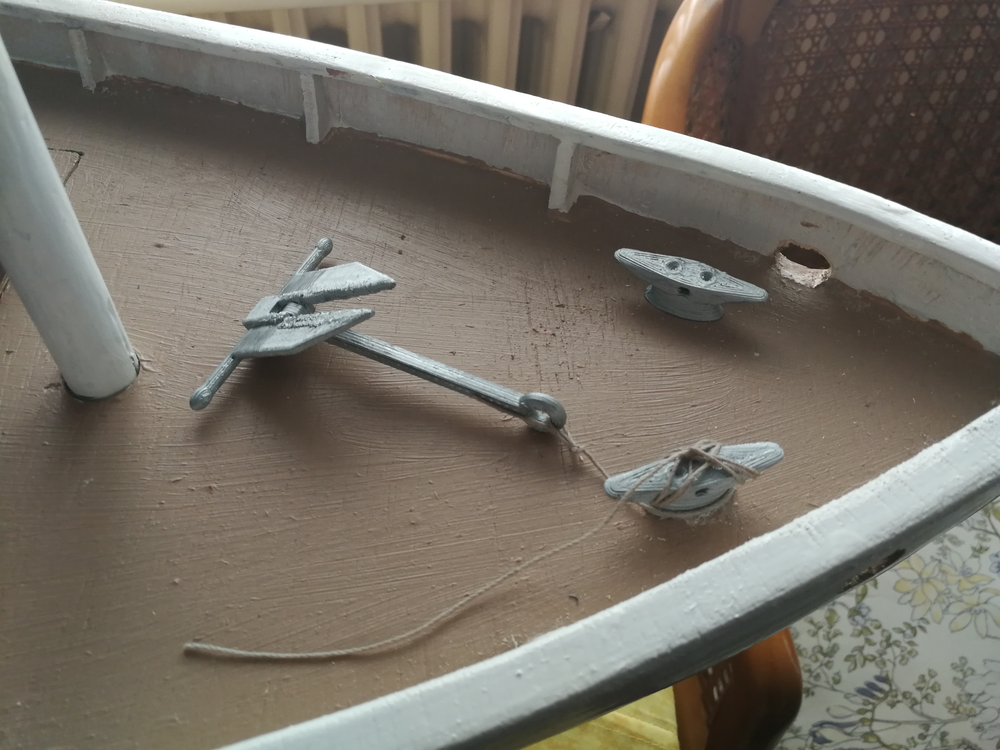A closer look at the 3d printed anchor. The lines were bought from an RC shop in Sweden.
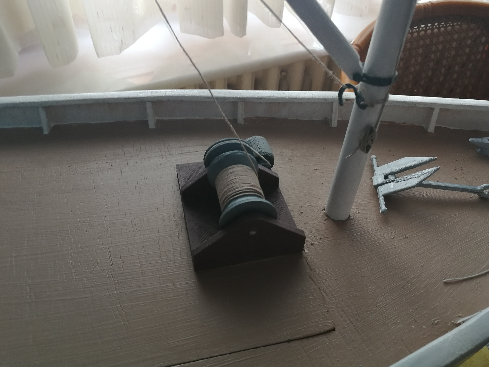A 3d printed vinch. Althoght the vinch does not work, the lines were bought from an RC shop in Sweden.
And thats it. It had a lot of fun while building this and have learned some practical skills.